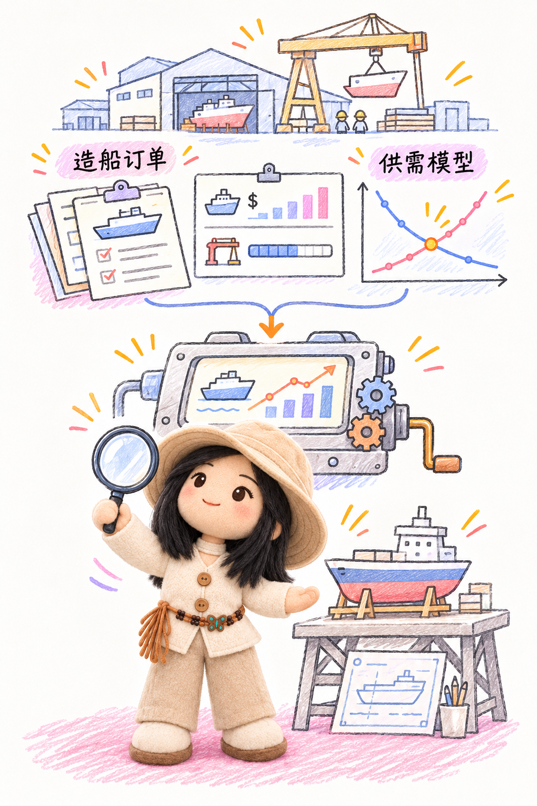

广发证券
研究所机械组实习生（2023年新财富第一）
- 造船行业深度研究：分析造船行业船价、订单等10余项数据，并根据指标体系构建自下而上的定性供需模型，进一步从需求修复、供给收缩与中小船企产能的非同步复苏三个角度分析此轮由产业逻辑驱动的造船上行行情
- 协助撰写汇川技术深度复盘报告：复盘工控龙头何以凭借强大阿尔法从单一赛道冠军到平台王者，从国产替代到走向全球：对外借助新能源产业链崛起+国产替代之机，对内凭借差异化优势筑牢竞争壁垒，进一步拆分各大业务,分析其发展前景

研究所机械组实习生（2023年新财富第一）